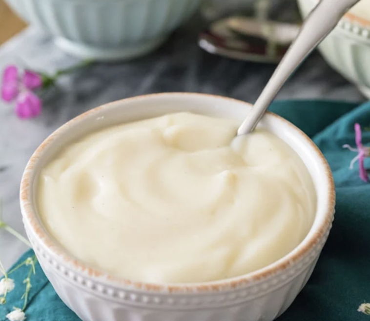

Vanilla Pudding

This creamy and flavorful Homemade Vanilla Pudding is easy and delicious! Serve alone or with cookies, berries or whipped cream.
This Homemade pudding is amazing for a hot day
Ingredients
- Milk
- Sugar
- Cornstarch
- Salt
- Vanilla
- Butter
Steps
- Heat milk in a medium saucepan over medium heat until bubbles form at the edges.
- Mix sugar, cornstarch, and salt together in a small bowl.
- Add sugar, cornstarch, and salt mixture to hot milk, a little at a time, stirring until thick enough to coat the back of the spoon.
- Remove saucepan from heat, and stir in vanilla and butter.
- Spoon pudding evenly into 5 serving dishes. For best results, chill pudding in the refrigerator before serving.